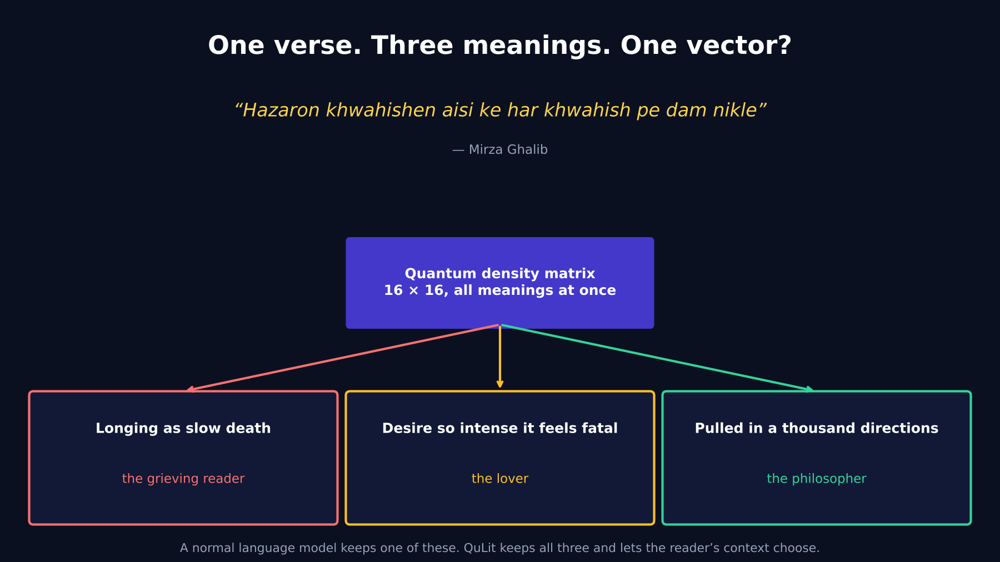
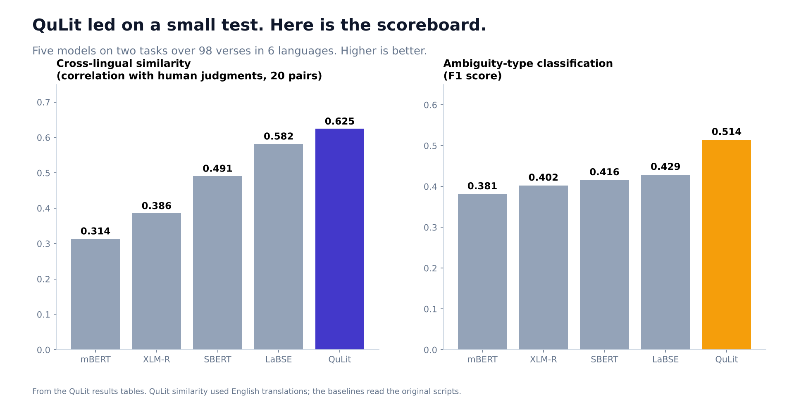

Can a Quantum Computer Understand a Poem That Means Three Things at Once?
I encoded 98 verses in six languages as quantum states, ran them on IBM hardware, and found out what it can and cannot do.

Mirza Ghalib wrote: "Hazaron khwahishen aisi ke har khwahish pe dam nikle." Thousands of desires, each so strong it takes my breath away.
What does it mean? That longing is a slow death. Or that every wish is so intense it feels fatal. Or that the speaker is pulled in a thousand directions at once. A grieving reader finds the first, a lover finds the second, a philosopher finds the third. None of them is wrong.
And here is the odd thing about how computers read poetry. A standard language model gives that verse exactly one list of 768 numbers. One point in space. One meaning. The other two are lost, and a Sufi mystic and a feminist critic get the same answer.
An idea borrowed from physics
Quantum mechanics has a precise word for something being several things until you look: superposition. A particle holds several states at once until a measurement forces a choice, and what you measure with shapes which choice you get.
That is close to how readers work. The verse holds several meanings, and the reader's context, whether grief, love, or philosophy, picks one.
So instead of one vector per poem, QuLit gives each poem a density matrix: a 16 by 16 grid of numbers that can represent several meanings at once. Then it "measures" the grid with 12 reader contexts (grief, love, Sufi, feminist, ironic and so on), and different contexts bring out different readings of the same verse.
What I built
- QuLitBench: 98 verses by hand, across Urdu, Hindi, English, Sanskrit, Tamil and Arabic, from 35+ authors over 2,000 years, each with three independent, valid interpretations that I wrote.
- A quantum circuit with four qubits that turns a verse's embedding into the density matrix.
- QLAS: a score for how ambiguous a verse is, combining entropy, how much the meanings interfere, and how much the reading changes with context.
- An explorer: paste any verse, see how its meaning shifts across contexts.
- A run on real IBM quantum hardware, compared against a noise-free simulator.
What the numbers said
| Task | QuLit | Best classical |
|---|---|---|
| Cross-lingual similarity (correlation with human judgments, 20 verse pairs) | 0.625 | 0.582 (LaBSE) |
| Classifying a verse's ambiguity type (F1) | 0.514 | 0.429 (LaBSE) |
A clear lead on a small test. Here is why I would not oversell it.

The honest asterisks
- The test is small. 98 verses and 20 pairs mean a few verses can move any number a lot.
- My comparison is not perfectly fair. QuLit measured similarity through English translations, while the classical models read the original scripts. Part of the gain may simply be translation, not quantum.
- Only 4 of 768 numbers go into the circuit. To fit four qubits, I used the first four values of each embedding. Whatever the circuit captures, it is working from a very thin slice of the verse.
- The quantum part may not be necessary. I ran an ablation, but I have not yet shown that a classical model with the same context operators could not do equally well.
- I have not yet tested the human side. My evaluation protocol with three annotators is designed, but I do not report it because I do not have real annotator results yet.
What is real
The framework is complete and open: the dataset, the encoder, the measurement idea, the metric, the explorer. The circuits really ran on IBM hardware. And the cross-lingual idea is the one I find most moving: the entanglement score is built to notice when verses from different languages share a meaning space with no parallel text, such as a Tamil line from about 200 BCE, "every place is my hometown, every person is my kin", and John Donne's "no man is an island", 1,800 years apart.
If you take one idea from this: a poem is not a point, it is a distribution, and any system that gives it a single number has already decided what it means.
Full details: QuLit technical documentation (Word)